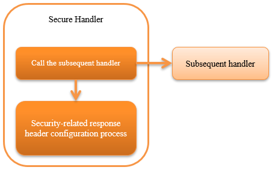

6.2.3. Secure Handler¶
Table of contents
This handler configures security related headers in the response object (HttpResponse).
By default, the following response headers are configured.
- X-Frame-Options: SAMEORIGIN
- X-XSS-Protection: 1; mode=block
- X-Content-Type-Options: nosniff
- Referrer-Policy: strict-origin-when-cross-origin
- Cache-Control: no-store
This handler performs the following process.
- Security-related response header configuration process
The process flow is as follows.
{kind=link}
6.2.3.2. Module list¶
<dependency>
<groupId>com.nablarch.framework</groupId>
<artifactId>nablarch-fw-web</artifactId>
</dependency>
6.2.3.3. Constraints¶
- Configure this handler after the HTTP Response Handler
- To set the response header set in this handler to the response object of Servlet API by the HTTP Response Handler.
6.2.3.4. To change the value of the header applied by default¶
Depending on the requirement, the value of security-related header applied by default may have to be changed.
For example, to disallow all the displays in the frame, the value of the X-Frame-Options header has to be changed to DENY.
In such a case, the settings in the component configuration file is configured explicitly.
An example is shown below.
<component class="nablarch.fw.web.handler.SecureHandler">
<property name="secureResponseHeaderList">
<list>
<!-- Explicitly specify the value for X-Frame-Options -->
<component class="nablarch.fw.web.handler.secure.FrameOptionsHeader">
<property name="option" value="DENY" />
</component>
<!-- Default vales are used for headers other than the above -->
<component class="nablarch.fw.web.handler.secure.XssProtectionHeader" />
<component class="nablarch.fw.web.handler.secure.ContentTypeOptionsHeader" />
<component class="nablarch.fw.web.handler.secure.ReferrerPolicyHeader" />
<component class="nablarch.fw.web.handler.secure.CacheControlHeader" />
</list>
</property>
</component>
Tip
Refer to the following class for details of the property to change the value.
6.2.3.5. Configure a response header other than the default¶
The procedure for configuring the security-related response headers other than the default is shown below.
- Specify the field name and value to be configured for the response header in the implementation class of the SecureResponseHeader interface.
Tip
If a simple response header with no logic is created, it can be created by extending SecureResponseHeaderSupport.
- Configure the class created in
No1in this handler (SecureHandler).
Important
When configuring the implementation class SecureResponseHeader, configure the component that is applied by default.
An example of the configuration file is shown below.
<component class="nablarch.fw.web.handler.SecureHandler">
<property name="secureResponseHeaderList">
<list>
<component class="nablarch.fw.web.handler.secure.FrameOptionsHeader" />
<component class="nablarch.fw.web.handler.secure.XssProtectionHeader" />
<component class="nablarch.fw.web.handler.secure.ContentTypeOptionsHeader" />
<component class="nablarch.fw.web.handler.secure.ReferrerPolicyHeader" />
<component class="nablarch.fw.web.handler.secure.CacheControlHeader" />
<!-- Additional component created -->
<component class="nablarch.fw.web.handler.secure.SampleSecurityHeader" />
</list>
</property>
</component>
6.2.3.6. Configure the Content-Security-Policy response header¶
The procedure for configuring Content-Security-Policy response headers is shown below.
- Configure
ContentSecurityPolicyHeaderto this handler (SecureHandler). - Configure
policytoContentSecurityPolicyHeader.
An example is shown below.
<component class="nablarch.fw.web.handler.SecureHandler">
<property name="secureResponseHeaderList">
<list>
<component class="nablarch.fw.web.handler.secure.FrameOptionsHeader" />
<component class="nablarch.fw.web.handler.secure.XssProtectionHeader" />
<component class="nablarch.fw.web.handler.secure.ContentTypeOptionsHeader" />
<component class="nablarch.fw.web.handler.secure.ReferrerPolicyHeader" />
<component class="nablarch.fw.web.handler.secure.CacheControlHeader" />
<!-- Component that assigns Content-Security-Policy -->
<component class="nablarch.fw.web.handler.secure.ContentSecurityPolicyHeader">
<!-- Configure the policy -->
<property name="policy" value="default-src 'self'" />
</component>
</list>
</property>
</component>
In this case, response header such as Content-Security-Policy: default-src 'src' is exported.
To operate in report-only mode, configure reportOnly to true.
An example is shown below.
<component class="nablarch.fw.web.handler.SecureHandler">
<property name="secureResponseHeaderList">
<list>
<component class="nablarch.fw.web.handler.secure.FrameOptionsHeader" />
<component class="nablarch.fw.web.handler.secure.XssProtectionHeader" />
<component class="nablarch.fw.web.handler.secure.ContentTypeOptionsHeader" />
<component class="nablarch.fw.web.handler.secure.ReferrerPolicyHeader" />
<component class="nablarch.fw.web.handler.secure.CacheControlHeader" />
<component class="nablarch.fw.web.handler.secure.ContentSecurityPolicyHeader">
<property name="policy" value="default-src 'self'; report-uri http://example.com/report" />
<!-- Operate in the report-only mode -->
<property name="reportOnly" value="true" />
</component>
</list>
</property>
</component>
In this case, response header such as Content-Security-Policy-Report-Only: default-src 'src'; report-uri http://example.com/report is exported.